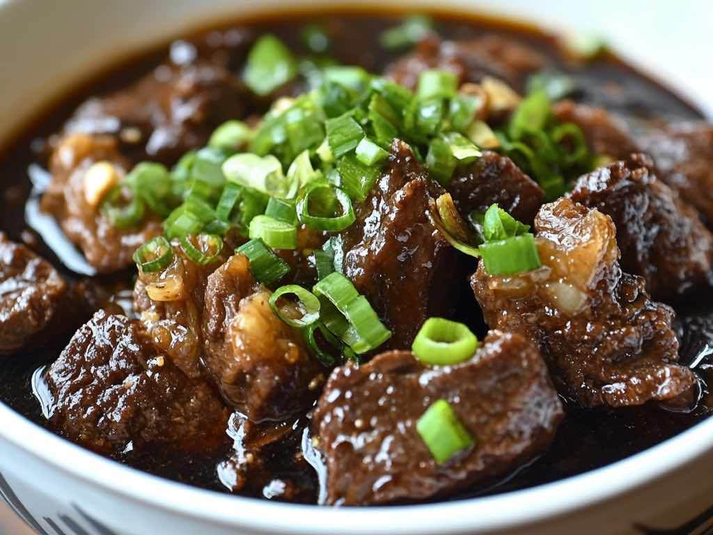

Beef Pares

Description
Pares, also known as beef pares, is a term for a serving of Filipino braised beef stew
with garlic fried rice, and a bowl of clear soup. It is a popular meal particularly associated
with specialty roadside diner-style establishments known as paresan.
Ingredients
- 2 1/2 lbs. beef
- 1 piece Knorr Beef Cube
- 2 pieces star anise
- 1/4 cup brown sugar
- 1/2 cup scallions
- 2 thumbs ginger
- 6 tablespoons soy sauce
- 1 piece onion
- 5 cloves garlic
- 2 1/2 cups water
- 3 tablespoons cooking oil
- Salt and ground black pepper to taste
Steps
- Heat oil in a cooking pot or pressure cooker. Saute onion, garlic, and ginger.
- Add the beef once onion softens. Cook until light brown.
- Pour soy sauce and water. Stir.
- Add Knorr Beef Cube and star anise. Cover the pressure cooker and pressure cook for 15 minutes.
- Add brown sugar and season with salt and ground black pepper. Cook for 8 to 10 minutes more or until the sauce reduces a bit.
- Top with chopped scallions and serve with sinangag and beef stock. Share and enjoy.
Home